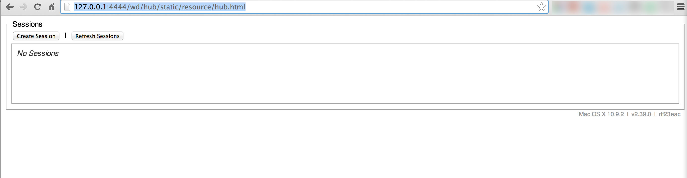

當你在開發一個大型的專案時，往往會因為需求復雜，或是年代久遠，沒有人記得當初某些功能是怎麼完成的，而造成新人不敢修改，老人一改就把舊功能改壞掉，一個好的自動化測試工具在這種狀態就非常的重要，除了程式必需撰寫的 Unit test 之外 ，通常我們還要加上 E2E 測試，例如使用 Selenium。
Selenium 是一個用來模擬真人的自動化測試工具，它可以操作網頁瀏覽器，自動連結網頁，輸入資料，然後自動點擊 Form Post 按鈕等等各種強大的功能，另外他們支援多個瀏覽器，能夠幫前端工程師抓到 CSS/JS Error。
Selenium 是 Server 端的工具，另外我們還必需使用一個 Client 端來傳送指令給 Selenium ，這個工具我們統稱為 WebDriver。
如何使用 Selenium 與 WebDriver
接下來我會一步一步教你如何安裝 Selenium ，並且寫一段簡單的 PHP 來進行測試。
安裝 Java
Selenium 是用 Java 寫成的，所以你一定要在你的作業系統中安裝 Java，請先至下面這個 Java 官網下載 Java 並安裝。
啟動 Seleniun
首先我們得先下載 Selenium 這套軟體，你可以從這個網址下載 http://docs.seleniumhq.org/download/ ，下載回來是一個 Java Jar 檔，啟動的指令如： java -jar selenium-server-standalone-2.39.0.jar。
另一個下載點 http://selenium-release.storage.googleapis.com/index.html
成功啟動 Selenium 後，你可以使用 telnet localhost 4444 , 或是打開 Browser 連上這個網址 http://127.0.0.1:4444/wd/hub ，Selenium 預設會使用 4444 Port 來接收指令，如果你看到的畫面如下，就代表 Selenium 已經啟動成功!
Facebook WebDriver
WebDriver 就是一個用來控制 Selenium 動作的 Library ，稱之為 Driver 因為他就像網卡一樣，網卡是用來控制網路傳輸，而 WebDriver 是用來控制 Selenium，這裡我使用的 WebDriver 是從 Facebook Git 上抓來下的，你可以在 https://github.com/facebook/php-webdriver 這裡下載得到。
接著我們寫一小段程式，呼叫 Selenium 打開 Firefox Browser 並且連上 Google 首頁
- <?php
- require_once "./php-webdriver/lib/__init__.php";
- $capabilities = array(
- WebDriverCapabilityType::BROWSER_NAME => 'firefox'
- );
- $seleniumUrl = 'http://localhost:4444/wd/hub';
- $driver = RemoteWebDriver::create($seleniumUrl, $capabilities, 5000);
- $driver->get("http://www.google.com.tw/");
- sleep(5);
- $driver->close();
程式有正確執行的話，你應該會看到你的電腦打開了 Firefox ，並連上Google 首面 ，我有故意在程式中加上 sleep 5 秒，這是怕 selenium 一執行完畢，就會自動關閉 Browser ，這樣會來不及確認是否有連到 Google。
"capabilities" 這個參數是用來指定基本設定，例如上面的範例中我指定了 Browser = firefox 。
自動打動網頁，並點擊連結的範例
這是稍復雜一點的範例，功能是連上我開發好的頁面，並且點擊一個連結，然後等待 Browser 載入頁面完成後，再繼續執行接下來的指令。
- $capabilities = array(WebDriverCapabilityType::BROWSER_NAME => 'firefox');
- $seleniumUrl = 'http://localhost:4444/wd/hub';
- $host = "http://www.puritys.me";
- $driver = RemoteWebDriver::create($seleniumUrl, $capabilities, 5000);
- $driver->get($host . "/docs-blog/article-49");
- $url = $driver->getCurrentUrl();
- error_log( "url = " . $url);
- //change url and wait
- $elm = $driver->findElement(
- WebDriverBy::cssSelector('.nav-box a:nth-of-type(1)')
- );
- $elm->click();
- // wait for at most 10 seconds until the URL is 'http://example.com/'.
- // check again 500ms after the previous attempt.
- $driver->wait(10, 500)->until(function ($driver) {
- if ($driver->getCurrentURL() === 'http://www.puritys.me/news') {
- error_log("Document is complete");
- return true;
- } else {
- return false;
- }
- });
- error_log("test");
- $driver->close();
設定視窗的尺寸，長寬
- $driver = RemoteWebDriver::create($seleniumUrl, $capabilities, 5000);
- $manage = $driver->manage();
- $window = $manage->window();
- $dimension = $window->getSize();
- $height = $dimension->getHeight(); //取得視窗的高
- $width = $dimension->getWidth(); //取得視窗的寬
- $newSize = new WebDriverDimension(100,200); // 設定視窗的寬高 = 100x200
- $window->setSize($newSize);
如何將視窗最大化
平常我們在使用 Selenium 時，最好都將 Window 視窗調成最大化，避免 Selenium 因為 Element 不在畫面上而選不到，最大化的方式很簡單，使用 maximize 即可。
- $manage = $driver->manage();
- $window = $manage->window();
- $window->maximize();
取得視窗位置與移動
- $position = $window->getPosition();
- echo $position->getX();
- echo $position->getY();
- //移動視窗
- $position->move(200, 0);
- $window->setPosition($position);
Selenium Protocol
WebDriver 不管開發者是誰，功能如何強力，他的 Server 一定還是 Selenium ，所以你只要了解 Selenium 所支援的功能，就能猜出 WebDriver 大概要怎麼使用了，也可以知道 Selenium 所支援的 API 有哪一些。
其它相關
driver 能夠使用的 method ，可以在 php-webdriver/lib/remote/RemoteWebDriver.php 中找到，例如 findElement 這個 Method 。
下面這個連結是 Selenium 如何操作 Browser 的 source code ，有一大部分的程式是用 JavaScript 寫成的，可以看這邊的程式，去了解 selenium 的實作方式。